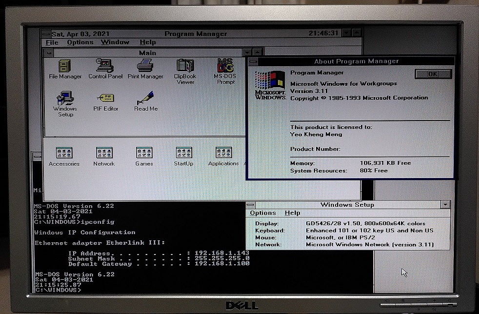
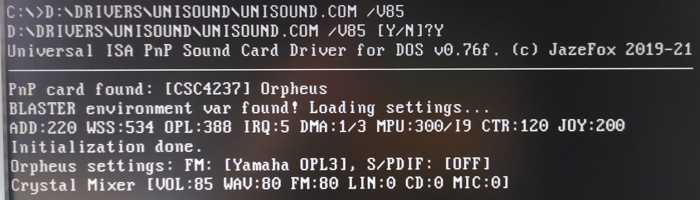
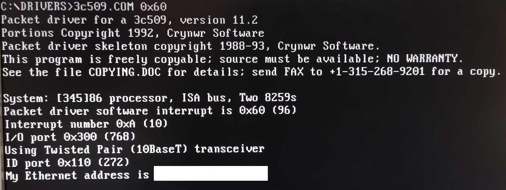

The first computer I used as a kid was a 486 PC back in 1995. My family upgraded past it and it was disposed of. However very recently, someone in the local tech community donated a 486 motherboard to me. This gave me an opportunity to relive some of my childhood!
In the spirit of giving back to the online community that I have learned a lot from, I decided to write this blog post to share my setup and learnings.
System Overview
The Intel 486 CPU was first released in 1989 but was updated for several years after that with faster variants. This system uses the DX2 variant released in 1992.
Here are the high-level specifications of the system as detected by the system diagnostic and benchmark tool CheckIt 3.
Bootup process
00:00: Pressing reset button
00:05: BIOS memory check
00:17: Selecting my my boot choice with DOS 6.22 menu option
00:54: Desktop comes in
01:19: Program Manager starts to load
01:30: Shutting down Windows
Have to admit system seems a little slow based on my memory of the 486’s performance.
Front Panel Impressions
The front panel has a mix of old and new technologies. (Ignore the Core i5 sticker :P)
DVD-RW IDE
A DVD-RW is kind of overkill for a system of this class but I don’t have a more period-correct pure CD-ROM drive. All IDE CD/DVD drives are backward compatible so no problems with using a “new” drive on an older system.
IDE HDD caddy
I had this caddy lying around for years and this setup is perfect to be able to receive such an IDE caddy.
512MB Compactflash (CF)
This CF card acts as the main IDE hard disk for the system. Its removable nature means I can easily copy files to and fro to it from a modern PC with a USB card reader.
A disk size of 512 MB was deliberately chosen as this BIOS cannot handle more than 528MB (504MiB) of hard disk capacity which was typical of that era. Period-correct IDE spinning magnetic hard disk drives of that size that are still working are getting rarer and more expensive by the years.
Floppy drives
A period-correct 486 PC needs to have a 1.44MB 3.5" Floppy.
Additionally I also installed a Gotek Floppy Emulator with HxC firmware. This Floppy Emulator can support up to 1000 floppy disk images being loaded into the USB drive. Selecting a particular image is as simple as pressing the external buttons to change the number selection.
A HxC firmware is an improvement over the original Gotek firmware as it lets you put the floppy image files directly on the USB drive as a file instead of having to use a special Gotek software to manage the USB drive in its own proprietary format.
No doubt, a Gotek drive is a modern replacement for old systems that still need native floppy drive access without the need to use rapidly ageing mechanical drives and floppy disks.
In fact, I installed DOS 6.22 and WFW 3.11 through this floppy emulator by loading their install disk images through the USB drive. It saved me a lot of time and effort instead of writing out the images to actual floppy disks.
Internal Hardware
Here is where the beef of this article starts to show. :)
The greatest difference between legacy and modern desktop PCs is the clutter. There is a lot more expansion cards and cabling required as the base motherboard is far less feature-integrated than modern models.
Gigabyte Motherboard
This Gigabyte GA-486VT motherboard was graciously donated to me and thus serve as a foundation for the rest of the setup.
It has 256K of onboard L2 cache and uses a UM82C482 chipset.
It has 1x 8-bit ISA slot and 6x 16-bit ISA slots of which 3x can be used for VESA Local Bus (VLB) slots.
VLB slots exist mostly on 486 motherboards and they offer faster performance to the aging ISA slots before the advent of the more industry-standard PCI.
Intel 486-DX2 CPU
This 486-DX2 66Mhz CPU serves as a brain for the entire system. It’s the exact same one used by my family’s initial 486 PC. I retained it when I was a kid before my family disposed of the rest of the PC. I’m so excited to put it to use again!
486 CPUs of that era generally operated on 33 Mhz bus speed to communicate with the rest of the system. This DX2 model was named as such as it has an internal clock multiplier to double its speed while maintaining compatibility with the bus speed of other peripherals.
Note the jumper placed on the TBSW (Turbo Switch) pin header on the left of the CPU. It has to be placed in order to not enable Turbo Mode which will cut CPU performance.
4x8MB RAM
32MB of total RAM is supplied by 8 sticks of 4MB EDO SIMM-30 RAM which actually cost me a tidy sum to get as it’s pretty uncommon today. Later 486 motherboards used SIMM-72 RAM sticks which are relatively more common and cheaper.
Expansion Cards
Unlike modern highly-integrated motherboards, even basic IO and connectivity features require expansion cards.
Graphics

Graphics is provided by a Cirrus Logic CL-GD5426 VLB which was donated to me together with the motherboard.
This card is capable of up to 2MB of video RAM but only 1MB is populated. Cirrus Logic cards are known then for their low cost but still reasonable performance.
1MB of video RAM is pretty good for that era and allows resolutions of 800x600 or 1024x768 depending on colour depth.
Sound
When I first started this build, I initially used a Creative Sound Blaster 16 as the Sound Blaster is the standard used by many DOS games and applications before Windows 95 standardised sound programming APIs.
This SB16 model CT2950 uses CQM and does not have an original Yahama OPL3 chip. I still use this to check for compatibility tests.
However I recently ordered and received an Orpheus Sound Card which is a modern ISA sound card made with the benefit of hindsight.
It features a Sound Blaster compatible Crystal CS4237B chip, genuine OPL3 Yamaha YMF289B, PC-MIDI option and many other features. Basically, the best modern DOS-era ISA sound card!
Network card
Network connectivity is provided by a 3Com 3C509B released in 1994 which is pretty common at that time.
This model supports many interfaces AUI, 10-Base-2 and of course 10Base-T Ethernet which is still compatible with modern networking equipment.
EIDE card
I use 2 of these EIDE ISA cards to provide primary and secondary disk controller access to the IDE CF card as well as DVD-ROM drives.
Floppy and Serial card
I assembled a modern Floppy and Serial ISA card based on the design.
I have set the configuration switch on SW1 (left) to enable an external serial port COM1 on IRQ3 and 0x3F8 address.
I disabled the card’s floppy ROM SW2.1 (right) to let the motherboard’s BIOS handle the floppy configuration.
Parallel card
Since I had a spare parallel card, I added this in as well.
Just like the serial card, care has to be taken to set the jumpers to the appropriate LPT address and interrupt to not conflict with the parallel port on the Multi-io card.
Real Time Clock (RTC) battery
All motherboards need some form of battery in order to maintain system time and BIOS settings.
Modern motherboards today use CR2032 batteries however legacy motherboards of the late 80s and early 90s like this use rechargeable NiCD or NiMH batteries which are prone to leaking after many years.
The original battery that was soldered to the motherboard has long stopped working and showed some signs of leaking.
To solve this, I cut away that battery and replaced it with 3x AA batteries. Thankfully this motherboard has a header for an external RTC battery source.
Power Supply
486-era motherboards and before generally use AT power connectors. These are incompatible with modern ATX power supplies.
As working AT power supplies are getting scarce and more expensive, I opted to use a modern ATX power supply with the adapter above. This comes with a -5V regulator.
I got this from Ebay a long time ago.
IO Shield
When this motherboard was given to me, it did not come with an IO Shield.

To mitigate the risk of dust or other objects entering the back of the case, I got a 3D-printed IO shield. This special shield allows you to cut out the portions you need in this case, just the AT (not even PS/2!) keyboard connector.
It fits quite well at the back.
External keyboard/mouse adapter
486-era and prior motherboards usually do not have PS/2 mouse port. Most users use serial mice instead.
As serial mice are pretty scarce this days, I opted to use a PS2 mouse to serial converter so I can use a “newer” PS/2 mouse with this system.
The AT keyboard connector is passively converted to a PS/2 port.
This converter requires a 5V power source from a USB Host. As this system obviously predates USB, I got a Molex to USB adapter to pull 5V from the ATX power. I then thread the USB cable through the rear of the case.
BIOS
The BIOS is from American Megatrends (AMI) which is common of that era. Even on many modern computers today, the UEFI (BIOS replacement) are also from AMI.
This BIOS seems to be Y2K compatible.
The BIOSes of that era are usually not capable of enumerating more than 504 MiB (528 MB) of hard disk. Despite that, I tried a 2GB CF card. It strangely seems to enumerate correctly.
True colours are revealed when I used Fdisk to try partition the disk. Only 504 MiB (528 MB) is accessible. BIOS is lying HAHAHA.
OS setup
After lots of trial-and-error with the hardware, the OS setup portion was relatively easier.
In this system I opted to install DOS 6.22 and Windows for Workgroups 3.11 which is optimal for such a system. A 486 system can technically run Windows 95 or 98 but it would be much slower.
DOS Multi-configuration
DOS 6 and up allows the user to select from a set of custom startup configuration settings.
Here, the system will start up differently depending on whether I want only DOS to be loaded or Windows 3.1.
For DOS boot, extra drivers like Mouse and Network Packet drivers will be loaded.
For more details about the config.sys and autoexec.bat files used, I have uploaded them on Github.
DOS drivers
As DOS is extremely primitive, most hardware peripherals even the basic ones will need to be configured or some driver loaded in order to use them.
Mouse
Something as basic as a Mouse needs a driver??? This is DOS for you.
CuteMouse is a relatively modern DOS mouse driver that was last updated in 2008. Its main benefit is its low memory footprint compared to other drivers.
CD-ROM
I opted to use a Toshiba CD-ROM driver that seems stable and worked well for my system.
An alternative is VIDE-CDD.SYS from Acer that is claimed to have the lowest memory footprint but it did not work with my particular system.
Sound PnP
Late-generation ISA cards support a feature (now retroactively) called Legacy Plug-and-Play (PnP) to automatically assign system resources to it. Before Legacy PnP, resources like addresses and interrupts have to manually configured on each card via jumper settings.
This Orpheus sound card is no exception as well.
I use a Universal Sound Card initialisation tool for DOS-era sound cards called Unisound written by JazeFox.
It’s works extremely well and fast with minimal installation and configuration required. In fact, it is still actively developed as shown by its 2021 copyright date!
Network Packet driver
DOS has no native network capabilities. To access the network, a 2-step process is required.
- Load a Packet driver
- Start networking software that use that Packet driver directly.
A Packet driver is a standardised networking API for DOS.
I got the drivers from FreeDOS
After loading the Packet driver, you need networking utilities. Here I use a tool called MTCP which provides DHCP, PING, FTP and other utilities. This tool is still actively developed with the latest version released in 2020.
CPU Idle
Most modern operating systems will try to put the CPU to sleep when there is nothing to do.
DOS however does not do it hence leading to extra power consumption and heat generation.
DOSIdle is a Terminate-and-Stay-Resident program (TSR) that runs in the background to tell the CPU to halt when it is idling.
You can download the latest version DOSidle 2.51
Windows drivers
Windows 3.1 is relatively easier to setup once the DOS foundation is firmly established.
Only a few more drivers have to be added.
Networking
WFW 3.11 by default has Network Driver Interface Specification (NDIS) drivers for the 3COM 3C509 card. NDIS is basically another standard like Packet drivers except by Microsoft that is still used till today.
To prevent conflicts, the DOS Packet driver is not loaded if I opt to start Windows 3.1 hence the DOS Multi-menu configuration.
One just has to install the TCP-IP package for WFW311.
If everything goes well, we can surf the web with Internet Explorer 5. Google still works!
Video
A driver from Cirrus Logic has to be installed in order to attain higher resolutions over the default VGA 640x480.
I could not get the 1024x768 resolution to work as the LCD monitor I used seems to have problems with the refresh rate so I’m stuck at 800x600.
Sound
I used the suggested Crystal Drivers provided by Orpheus. I used the non-PNP ones as the PNP ones seems to have issues as described on the website.
To use the non-PNP driver, Unisound DOS driver has to be launched beforehand.
Benchmarks
Using the Norton System Information 8.0 tool released in 1994, I decided to run some basic benchmarks.
Double the performance of a 486DX-33, sounds right.
The data transfer speed of 2074.5 KB/s is definitely acceptable for that time.
The ultra-low seek time is where the solid-state nature of the CF card really shines!
Final Words
The approach to setting up a 486 or any other retro PC in modern times will be similar in some sense yet definitely differ significantly from its period-correct days.
One has far greater access to online information plus the benefit of modern software and hardware tools.
What has impressed me the most in this setting up journey is the continued community development of tools and drivers for an OS that is long considered obsolete. Without those tools, it would have been a greater challenge to do things the old-fashioned way.
Even if tech-users of that era have lived through those times in person, I’m sure there is definitely something new to learn here as well. I have definitely learned so much that we have taken for granted in the setup of modern PCs.


{kind=link}
{kind=link}
{kind=link}
{kind=link}
{kind=link}
{kind=link}
{kind=link}
{kind=link}
{kind=link}
{kind=link}
{kind=link}
{kind=link}
{kind=link}
{kind=link}
{kind=link}
{kind=link}
{kind=link}
{kind=link}
{kind=link}
{kind=link}
{kind=link}
{kind=link}
{kind=link}
{kind=link}
{kind=link}
{kind=link}
{kind=link}
{kind=link}
{kind=link}
{kind=link}
{kind=link}
{kind=link}
{kind=link}
{kind=link}
{kind=link}